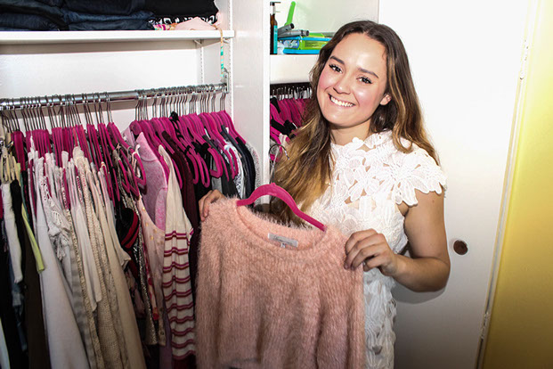
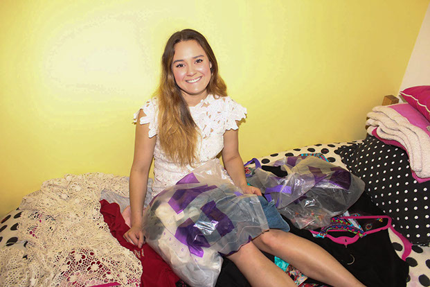

<
>
It takes a special kind of 14-year-old to think that she’s being lazy for not having changed the world yet, but Wharton sophomore Allyson Ahlstrom was that kind of kid.
After reading, “Generation Change,” a book by a normal teenage boy who had pledged to end modern-day slavery, Allyson decided that she too needed to do something to change the world.
“I was like, ‘Oh my gosh, there’s a 12-year-old raising money for human trafficking, I’m behind the game — I need to do something,” she explained.
That night, she developed a logo, a letter to solicit donations and an idea for a one-time clothing drive to provide new outfits for girls in foster care. That one-time clothing drive has since developed into a registered nonprofit, with Allyson at the helm, called Threads for Teens.
“I was just young and naive, so I sent out over 300 letters to clothing companies like, ‘I’m Allyson! I’m 14! I want to make a difference! Can you help me?’ and I got a great response. And ever since then it’s just grown and grown and grown, and now here I am with a year-round, full time organization,” Allyson said.
Threads for Teens is a clothing boutique for girls in foster care and group homes aged 13-17. The girls Allyson serves can come to the boutique and pick out two new outfits, all completely for free. Over 40 national sponsors, including Nasty Gal, For Love & Lemons, Mara Hoffman and Claire’s, donate clothing to stock the California boutique and the semi-truck that she has converted into a mobile boutique.
Over the past two summers, Allyson drove the mobile boutique around the country, visiting the 48 continental states and Washington, D.C., to give over 2,000 girls new outfits. She is currently expanding, with plans to open a boutique here in Philadelphia. Ultimately, Allyson plans to open boutiques in all 50 states.
According to her mother, Amy Ahlstrom, Allyson never thought she was too young to make a difference in the world.
“Allyson has never let her age get in the way of her passion for volunteerism. When she wants to get something done, she does it," Amy said. "Allyson serves others out of her heart, not out of obligation."
A PROJECT PROPONENT
Threads for Teens focuses on clothing and the relationship between what someone wears and self-confidence — a natural fit for Allyson's longstanding interest in fashion. She spent her free time sewing, sketching and pattern reading, and planned on going to fashion school before deciding that she was better suited for a business background.
“I’ve always been kind of obsessed with trying to make money and start a business. I have so many books that I bought when I was younger about how to sell stuff on eBay, and business ideas like make a lemonade stand, make your own beauty products or whatever it may be,” Allyson said.
But her final decision to forego design school for business school had more to do with Allyson's role models than anything else. She realized that the people she admired all had what she perceived as more rigorous educations than she could get from fashion school.
“I’m a very, very high achieving individual and, you know, getting into fashion school I guess isn’t the most difficult thing, but it is pretty difficult to go to a top business school and do well at that school and learn so much stuff," she said. "And the resources here are just so valuable, just to have the opportunity to work with top leaders in the field of management and finance."
Threads for Teens may have been Allyson's most successful venture so far, but she has always been singularly focused and project-oriented. She started a newspaper at her elementary school, which she enjoyed so much that she also worked to create a newspaper at her high school. At Penn, she is a member of the marketing club MUSE, where she just finished planning a week-long marketing conference. Allyson is also the social chair for her sorority, Zeta Tau Alpha, as well as the vice president of marketing for the Wharton Entrepreneurship Club.
“I’m definitely one of those people who starts stuff and finishes it," she said. "People that know me describe me as like, ‘Okay she gets stuff done'."
Allyson’s desire to immerse herself in activities at Penn has stretched her thin, forcing her to spend less time on Threads for Teens than she feels she needs to. For this reason, she has decided to decrease her involvement in some of her Penn-related groups to commit more time to running her organization.
“I think I made a mistake when I first came to Penn and got involved with so many organizations and sought leadership positions in them, that it was not feasible to do Threads for Teens full-time, but I’ve been slowly stepping away," Allyson said. "I’m trying to make Threads for Teens my number one priority."
LATENT POWER
Penn students may be familiar with the prevailing narratives about Wharton's highly ambitious students like Allyson, but few have had her highly individualized schooling experience. After attending elementary school in Nevada, Allyson and her family moved to California, where she was homeschooled with her sister. Her mother stressed the importance of immersive education, so Allyson and her sister travelled around the world to visit the places they were studying. The sisters learned about the Boston Tea Party in Boston and the French Revolution in France. She recounted meeting the subject of a book she had read for her English curriculum on a family visit to Alaska.
“We went to Alaska and we were learning about dog-sledding, and I actually got to meet a famous dog-sledder named Libby Riddles," she said. "I had read one of her books, and I thought that was really cool."
After middle school, Allyson moved back to the Bay Area of California to attend high school. This kind of schooling, she imagines, is how she would educate her own children.
“I would love to home-school [my own kids,] but they need to go to high school. I think it’s really important to learn how to socialize before going to college," she said. "I cannot imagine coming to Penn after being homeschooled. That would have been culture shock; it would have been awful."
Allyson hopes to expand Threads for Teens into an all-encompassing program centered on mentorship and female empowerment. Still, she views the experience of choosing one’s own clothing as a critical step in developing self-confidence.
“By giving these girls clothes and by giving them the option to choose something they love, they’re expressing themselves. And furthermore, it’s not just about the clothes — it’s also about the experience of being treated with dignity,” Allyson said.
Allyson recounted a story about a girl she met during one of her summer road trips in the mobile boutique to Cheyenne, Wyo. The girl broke down in tears upon entering the boutique because she had never been given clothing out of anything other than a garbage bag. She had always wanted a dress but had never had the opportunity to choose one. Allyson points to this as a display of the humanizing experience she hopes to spread to young girls.
Ultimately, Allyson's dreams extend beyond Threads for Teens. She may want to start her own fashion line and run her own business, but she wants to leave her organization in capable hands and with a self-sustaining model.
Her mother has big, if slightly less specific, hopes for Allyson as well.
“My hope for Allyson's future is that she is happy and that all of her dreams and goals become a reality,” Amy Ahlstrom said.
Beneath all the clothes and the glitzy pink semi-truck, Allyson and Threads for Teens offer an important message about female empowerment. Clothes are a part of her mission, certainly, but she uses them as a means to an end. Through fashion, she connects girls who have suffered from a lack of opportunity and respect with their inner confidence. Using a tool that many Penn students take for granted — the ability to express ourselves and our goals through our clothing choices — Allyson wants to tap into girls’ latent power.
At its heart, Threads for Teens is a feminist organization.
“I don’t know how anyone could not consider themselves a feminist. I think the word maybe has some negative connotations, but I see being a feminist as just wanting gender equality and empowering girls to go after their dreams in life," Allyson said. "I don’t know anyone who doesn’t want that.”
“By giving these girls clothes and by giving them the option to choose something they love, they’re expressing themselves. And furthermore, it’s not just about the clothes — it’s also about the experience of being treated with dignity.”
-Allyson Ahlstrom